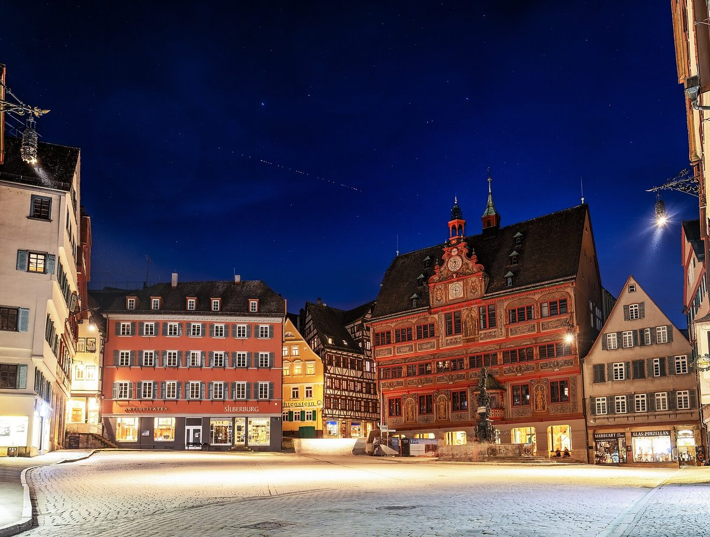

Starlink Mobile buys its way indoors
An 800 MHz deal adds a low-band "coverage layer" to the direct-to-phone constellation. Musk called it an earthquake, and carrier stocks fell.
The last piece of the puzzle
Shortly after 4 p.m. EDT Thursday, SpaceX announced an agreement to acquire "a nationwide low-band spectrum license portfolio that will pave the way for @Starlink to become a major mobile carrier in the US." Grain Management's release says SpaceX will take 100% of the private investment firm's 800 MHz portfolio, which Grain bought from T-Mobile in August, subject to Federal Communications Commission (FCC) approval. Musk quoted a post contrasting an AT&T jab that Starlink Mobile "won't be able to penetrate walls" with the new low-band holdings:
"This is the last critical piece of the spectrum puzzle needed for SpaceX to provide complete phone coverage in America"
He reshared the company announcement with "Very big deal," and when investor Chamath Palihapitiya wrote "This is a very big deal," Musk went further:
"To the casual observer, this won't seem like much. To those who understand the spectrum wars, it's an earthquake."
According to Via Satellite, SpaceX said its global 2 GHz mid-band spectrum will supply capacity while the low band "will provide a coverage layer that ensures Starlink Mobile's signal penetrates through obstacles, such as walls." SpaceX also said most existing phones already support the band. With the new spectrum and its second-generation satellites, the company says Starlink Mobile will be "the first network operator to deploy both satellite and terrestrial spectrum." The Verge framed the move as a direct challenge to T-Mobile, AT&T and Verizon. When a fan noted that phones arriving in 2027 and 2028 will carry chipsets for Starlink Mobile's higher-throughput spectrum, Musk replied "Yes."


The market's verdict
Neither company disclosed terms, but Reuters reported Friday that the Wall Street Journal put the price at about $8 billion. In premarket trading, T-Mobile US, Verizon and AT&T fell between 5.5% and 7.4%. Europe's STOXX 600 telecom index dropped more than 2%, with Deutsche Telekom down 6.5% and Vodafone down 4.1%. Tower owners American Tower, Crown Castle and SBA Communications rose 6.7% to 8.3%. Morgan Stanley analysts called the deal "a clear sign that SpaceX is going to be a more aggressive acquirer of spectrum," but expect any threat to carriers to build gradually, starting in rural markets.
India, again. Musk kept pressing for Starlink in India, quoting a post on the country's floods and cyclones with "Starlink saves lives during natural disasters."
Worth more than Earth
Just before 6 p.m. EDT, Musk posted what became one of his most-viewed lines of the day, seen more than six million times:
"This will sound super crazy, but I see a path to SpaceX being worth orders of magnitude more than the current Earth economy"
He gave no timeline or figure, as 24/7 Wall St. noted. Replying to a user who said the space economy has "almost infinitely more growth potential than earth's," he added: "Earth is a tiny dust mote in our solar system." Earlier he had reshared a clip of himself on SpaceX's purpose ("The goal of SpaceX is to build the technologies necessary to make life multiplanetary") with "This is why."